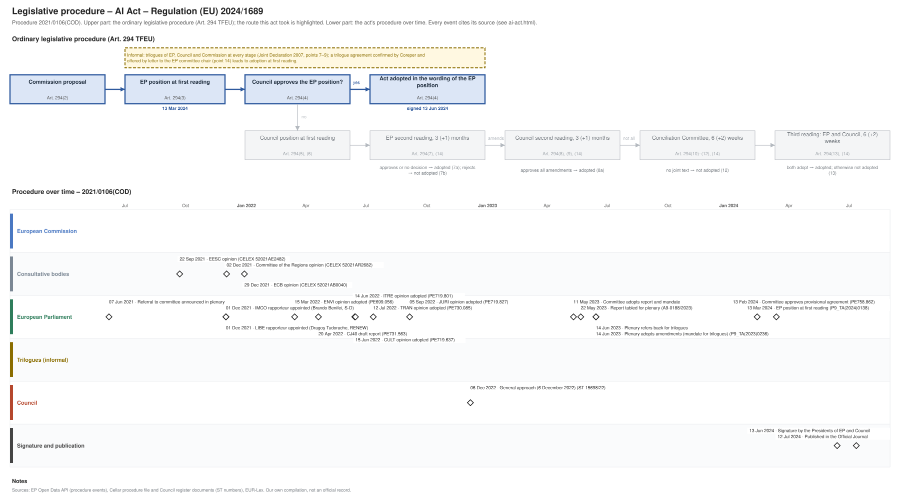

← All procedures · Regulation timeline
Procedure 2021/0106(COD), completed. Drawing: SVG · PNG · PDF (A3) · draw.io · Page as Markdown: ai-act.md
| Stage | Completed, published 12 Jul 2024 |
|---|---|
| Latest activity | 12 Jul 2024 · Signature and publication: Published in the Official Journal |

| Date | Actor | Event | Document | Source |
|---|---|---|---|---|
| 2021-06-07 | European Parliament | Referral to committee announced in plenary | EP Open Data API, procedure 2021-0106 (REFERRAL) | |
| 2021-09-22 | Consultative bodies | EESC opinion | CELEX 52021AE2482 | Cellar procedure file 2021/106 |
| 2021-12-01 | European Parliament | IMCO rapporteur appointed (Brando Benifei, S-D) | EP Open Data API, procedure 2021-0106 (participation RAPPORTEUR) | |
| 2021-12-01 | European Parliament | LIBE rapporteur appointed (Dragoş Tudorache, RENEW) | EP Open Data API, procedure 2021-0106 (participation RAPPORTEUR) | |
| 2021-12-02 | Consultative bodies | Committee of the Regions opinion | CELEX 52021AR2682 | Cellar procedure file 2021/106 |
| 2021-12-29 | Consultative bodies | ECB opinion | CELEX 52021AB0040 | Cellar procedure file 2021/106 |
| 2022-03-15 | European Parliament | ENVI opinion adopted | PE699.056 | EP Open Data API, procedure 2021-0106 (COMMITTEE_ADOPTING_OPINION) |
| 2022-04-20 | European Parliament | CJ40 draft report | PE731.563 | EP Open Data API, procedure 2021-0106 (COMMITTEE_TABLING_REPORT) |
| 2022-06-14 | European Parliament | ITRE opinion adopted | PE719.801 | EP Open Data API, procedure 2021-0106 (COMMITTEE_ADOPTING_OPINION) |
| 2022-06-15 | European Parliament | CULT opinion adopted | PE719.637 | EP Open Data API, procedure 2021-0106 (COMMITTEE_ADOPTING_OPINION) |
| 2022-07-12 | European Parliament | TRAN opinion adopted | PE730.085 | EP Open Data API, procedure 2021-0106 (COMMITTEE_ADOPTING_OPINION) |
| 2022-09-05 | European Parliament | JURI opinion adopted | PE719.827 | EP Open Data API, procedure 2021-0106 (COMMITTEE_ADOPTING_OPINION) |
| 2022-12-06 | Council | General approach (6 December 2022) | ST 15698/22 | Cellar procedure file 2021/106 (Council register) |
| 2023-05-11 | European Parliament | Committee adopts report and mandate | EP Open Data API, procedure 2021-0106 (COMMITTEE_ADOPTING_REPORT) | |
| 2023-05-22 | European Parliament | Report tabled for plenary | A9-0188/2023 | EP Open Data API, procedure 2021-0106 (TABLING_PLENARY) |
| 2023-06-14 | European Parliament | Plenary refers back for trilogues | EP Open Data API, procedure 2021-0106 (PLENARY_REFER_COMMITTEE_INTERINSTITUTIONAL_NEGOTIATIONS) | |
| 2023-06-14 | European Parliament | Plenary adopts amendments (mandate for trilogues) | P9_TA(2023)0236 | EP Open Data API, procedure 2021-0106 (PLENARY_AMEND) |
| 2024-02-13 | European Parliament | Committee approves provisional agreement | PE758.862 | EP Open Data API, procedure 2021-0106 (COMMITTEE_APPROVE_PROVISIONAL_AGREEMENT) |
| 2024-03-13 | European Parliament | EP position at first reading (Art. 294(3) TFEU) | P9_TA(2024)0138 | EP Open Data API, procedure 2021-0106 (PLENARY_AMEND_PROPOSAL) |
| 2024-06-13 | Signature and publication | Signature by the Presidents of EP and Council | EP Open Data API, procedure 2021-0106 (SIGNATURE) | |
| 2024-07-12 | Signature and publication | Published in the Official Journal | EP Open Data API, procedure 2021-0106 (PUBLICATION_OFFICIAL_JOURNAL) |
| Date | Document | Kind | Subject |
|---|---|---|---|
| 2021-09-22 | CELEX 52021AE2482 | opinion | Opinion of the European Economic and Social Committee on Proposal for a Regulation of the European Parliament and of the Council laying down harmonised rules … |
| 2021-12-02 | CELEX 52021AR2682 | opinion | Opinion of the European Committee of the Regions — European approach to artificial intelligence — Artificial Intelligence Act (revised opinion) |
| 2021-12-10 | PE699.056 | ep-draft-opinion | DRAFT OPINION on the proposal for a regulation of the European Parliament and of the Council laying down harmonised rules on Artificial Intelligence … |
| 2021-12-29 | CELEX 52021AB0040 | opinion | Opinion of the European Central Bank of 29 December 2021 on a proposal for a regulation laying down harmonised rules on artificial intelligence (CON/2021/40) … |
| 2022-02-21 | PE719.637 | ep-draft-opinion | DRAFT OPINION on the proposal for a regulation of the European Parliament and of the Council laying down harmonised rules on artificial intelligence … |
| 2022-03-02 | PE719.827 | ep-draft-opinion | DRAFT OPINION on the proposal for a regulation of the European Parliament and of the Council laying down harmonised rules on artificial intelligence … |
| 2022-03-03 | PE719.801 | ep-draft-opinion | DRAFT OPINION on the proposal for a regulation of the European Parliament and of the Council laying down harmonised rules on artificial intelligence … |
| 2022-03-29 | PE730.085 | ep-draft-opinion | DRAFT OPINION on the proposal for a regulation of the European Parliament and of the Council laying down harmonised rules on artificial intelligence … |
| 2022-04-20 | PE731.563 | ep-draft-report | DRAFT REPORT on the proposal for a regulation of the European Parliament and of the Council on harmonised rules on Artificial Intelligence (Artificial … |
| 2022-04-22 | PE699.056 | ep-opinion | OPINION on the proposal for a regulation of the European Parliament and of the Council laying down harmonised rules on Artificial Intelligence (Artificial … |
| 2022-06-14 | PE719.801 | ep-opinion | OPINION on the proposal for a regulation of the European Parliament and of the Council laying down harmonised rules on artificial intelligence (Artificial … |
| 2022-06-16 | PE719.637 | ep-opinion | OPINION on the proposal for a regulation of the European Parliament and of the Council laying down harmonised rules on artificial intelligence (Artificial … |
| 2022-07-12 | PE730.085 | ep-opinion | OPINION on the proposal for a regulation of the European Parliament and of the Council laying down harmonised rules on artificial intelligence (artificial … |
| 2022-09-12 | PE719.827 | ep-opinion | OPINION on the proposal for a regulation of the European Parliament and of the Council laying down harmonised rules on artificial intelligence (Artificial … |
| 2022-12-06 | ST 15698/22 | council-position | General approach (6 December 2022) |
| 2023-05-22 | A9-0188/2023 | ep-report | REPORT on the proposal for a regulation of the European Parliament and of the Council on laying down harmonised rules on Artificial Intelligence (Artificial … |
| 2023-06-14 | P9_TA(2023)0236 | ep-position | Artificial Intelligence Act |
| 2024-02-02 | PE758.862 | agreed-text | PROVISIONAL AGREEMENT RESULTING FROM INTERINSTITUTIONAL NEGOTIATIONS Proposal for a regulation laying down harmonised rules on Artificial Intelligence … |
| 2024-03-13 | P9_TA(2024)0138 | ep-position | Artificial Intelligence Act |
{kind=link}
{kind=link}